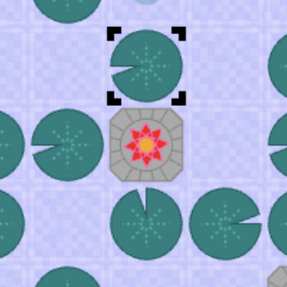
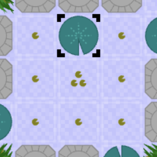
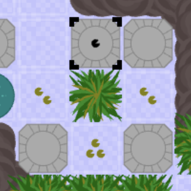
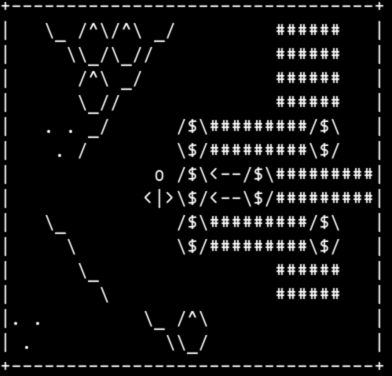

Lily-pond
Explore the serene world of the lily-pond and its surrounding water-gardens. Tiptoe across the delicate lily-pads, gather seed-pods, grow new lily-pads and discover how to harvest and recycle essential resources. In your travels keep a lookout for the rare Andreana lily blooms that will unlock new gardens to explore. A route-finding, resource-management puzzle-game with a simple but deep core mechanic.
This puzzle concept was conceived late summer 2024 and was a labour of love for over two years. Early on I decided to break standard thinky-game protocol and squish multiple puzzles together into dense gardens, obfuscating both the immediate goal and sense of boundary. A contentious decision for sure, but one that ultimately drove much of the creative process (read more below). As a result Lily-pond is gloriously rambling and maze-like, just as nature intended.

This puzzle area is interactive
click to give it focus then use keyboard to play
Recent updates
14/09/2026: V1.0: The final cut. The full eight gardens. Job done. I predict V1.x will follow shortly.
Guidance and overview

This game comes with minimal upfront information about the puzzle mechanics, everything you need to know is discoverable as you play. But if a little help is needed I also offer a detailed breakdown of all mechanics which includes some strategic advice and hints. For general guidance on how to navigate the puzzlescript UI see Q02 on the help page.Untypically (for a PS-app) this game offers both level-select (in this case chapter/garden select) and checkpoints (within a chapter). The checkpoints offer you a localised restart, without having to restart the whole garden. Be warned, in the later gardens, it will be possible to hit checkpoints in the wrong order. Rewinding through multiple checkpoints (using undo) is one way to right this wrong. Here are some other UI features that may be useful:
- Sneak-peek: Double action (or click/tap) at a checkpoint to briefly zoom out to a full garden overview (move to cancel).
- Zoom-out mode: Nudge-up twice at the first checkpoint to flip into permanent overview mode. This mode is only suitable for full/large screen play.
- Reveal checkpoints: Nudge-down twice from the first check-point to reveal all checkpoints in the garden.
- Garden restart: To replay a garden from scratch go to the level-select menu and reload it.
Development notes - puzzle design

All puzzles in this game are hand-designed. I occasionally gave the PSNext solver a spin to test if a small configuration of objects would permit (or block) a specific goal but it didn't prove useful beyond that. No procedural generation was involved at any stage. Patrick Traynor's excellent document Puzzle Level Idea Strategies helped guide me when I needed new inspiration for level design. However the (not so) simple act of trying to weave puzzles into their respective gardens proved to be a powerfully creative process. Some examples of landscaping activities that led to new puzzles:- Looking for ways to fill awkward corners or narrow corridors.
- Looking for ways to reach and recycle resources left behind in earlier puzzle areas.
- Trying to squeeze a set-piece puzzle into a new shape to fit with its neighbours.
- Designing ways to allow the true-path to criss-cross itself around the garden.
- Discovering ways for the Andreana to play an active role in a puzzle solution.
- Discovering and fixing unintended short-cuts between puzzle-areas.
- Trying to fix unintended reveals of late-game mechanics.
A nod to Wanderer (1988)

When I first started experimenting with the garden format, I was strongly reminded of the game Wanderer (by Steven Shipway) that I first played circa 1989 on (probably) SCO Unix. Each "level" was a relatively large fixed size (40x16) and often contained multiple mini-puzzles that had to be solved in the right order. Played in its default, restricted-view mode (a window of 11x7) each sprite was a 3x2 array of ascii characters. Exploration of the space was vital, to work out how the various puzzle areas interacted. The game could switch to full-view (each sprite now a single ascii character) but the levels still had a rambling maze-like feel that required a fair amount of exploration.
Circa 1992 I designed one intricate wanderer level of my own (I remember only that it was called "one man and his dog" and involved a solitary wall-hugging monster). Together the player and monster solved a sequence of compact, tightly intertwined puzzles that completely filled the 40x16 play-area. Individual puzzles had no clear boundary and were multi-connected, to encourage the monster (or player) to wander off in the wrong direction. A maze-like puzzle where the true-path and many false-paths shared the same space. Lily-pond sits snug in the same design-space. Both can be viewed as logic-mazes built from atomic components that are individual puzzles in their own right.
The challenge to good design is to give the illusion of chaos without overwhelming the player. Boundaries and sub-goals need to be deducible with a little extra thought or exploration. False paths and fake exits should yield to logic the same way. The aim is to give a thin sugar-coating of bonus AHA as each checkpoint is reached. Have I got the balance right? Feel free to let me know. Modern puzzle games treat space and level boundaries with a little more respect. Watch a journey into space by Dom Camus, to discover why thinky-games generally don't do things this way.
Links & related pages
- A lengthy and detailed breakdown of all mechanics
- Play direct from GIST source (hackable)
- Wanderer by Steven Shipway (as I remember it)
- Explore more thinky-games in the thinky-games database
- A walk-through of V0.12 (Sept 25) shared by MikanHako
- A walk-through of V1.0 (Sept 26) recorded by myself.
- Puzzle Level Idea Strategies by Patrick Traynor
- A journey into space by Dom Camus
concept & puzzle design - © Andrea Gilbert - 2024-26
puzzlescript implementation - © Andrea Gilbert - 2024-26